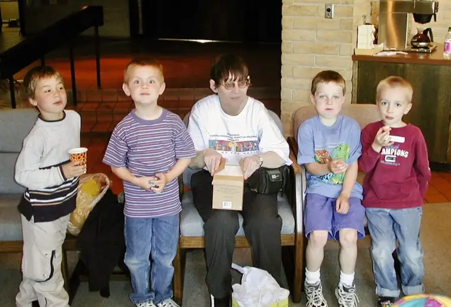
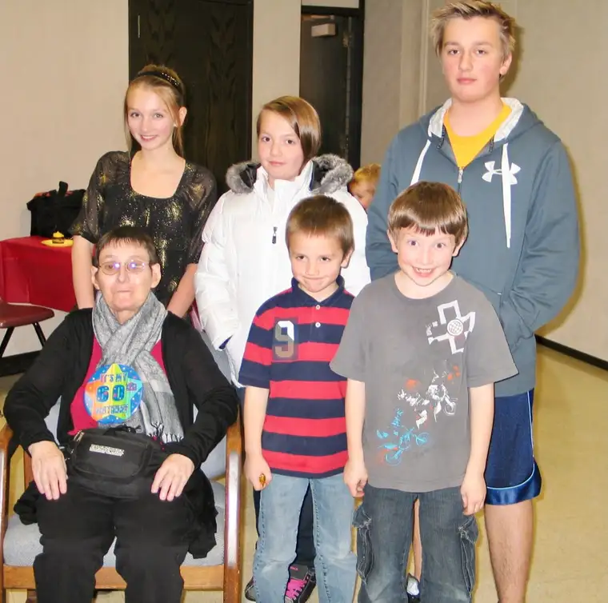

I’ve been sitting with the death of a friend for several weeks now, and as I recall her today, grief reaches into that tucked-away place where memory and heart meet, and tears come.
I’d been thinking a lot about Dona recently. Her nursing home off limits and hearing poor, attempts to visit would have been futile. But why hadn’t I sent a card?
Regret pours in.
Lingering there, though, makes no sense. She’s now free from the earthly impediments that bound her, and I’d rather delight in introducing you to this humble human, a light worth knowing and pausing for.
From her obituary: “Dona lovingly provided care for the children of many families over the years, many of whom she maintained a lifelong connection with.” I smile, for this is where we enter into her story.
We met Dona when our 25-year-old was around 3; that’s 22 years of knowing her during her 69 years. I had two young children at the time, one still clinging to my hip, but thirsting to grow in my relationship with God, I joined a mom’s faith-sharing group at Nativity Church in Fargo.

Dona played Lucky Ducks and Mr. Potato Head with our kids in a nearby room while we mothers learned and discussed Scripture for the upcoming Sunday. Her presence was golden. Through her sacrifice, we could take a breather from the challenges of mothering to focus on God a few hours each week. Even after we no longer needed child care, many of us stayed in touch with her.

Dona Joy – she loved her middle name – was unknown to most, and her material resources were few. But she was among the wealthiest of my friends. Words from a hymn, “Loving and Forgiving,” from Numbers 14:18, come to mind: “Slow to anger, rich in kindness.” They reveal the traits of God and the ways of Dona Joy.
Visits with Dona included her sharing photos of her extended family, a Diet Coke within reach, and her coaxing us into playing Skip-Bo or Bingo, and, at her request, me reading my Forum pieces aloud, and always ending with a sincere, “Thank you for visiting me.”
Despite fading eyesight and hearing, Dona saw clearly the most important things – kindness, time, life itself – and held an abundance of gratitude within.
Just a week before her passing, she got to celebrate one last birthday – a day she lived for each year – with some of her siblings. This, a God-given gift, no doubt. With her suffering as great as it was, especially these last years, it could be said death was a mercy for my friend.
Nevertheless, grief still grips those who knew her. But as I consider the light she brought, now extinguished, I think of the brightness Dona now enjoys, and the banquet for which she’s been preparing, not as servant but honored guest.
Thank you for everything, Dona Joy. May you rest in loving peace, knowing, finally, just how esteemed you are in the eyes of God.

[For the sake of having a repository for my newspaper columns and articles, I reprint them here, with permission, a week after their run date. The preceding ran in The Forum newspaper on Dec. 6, 2020.]